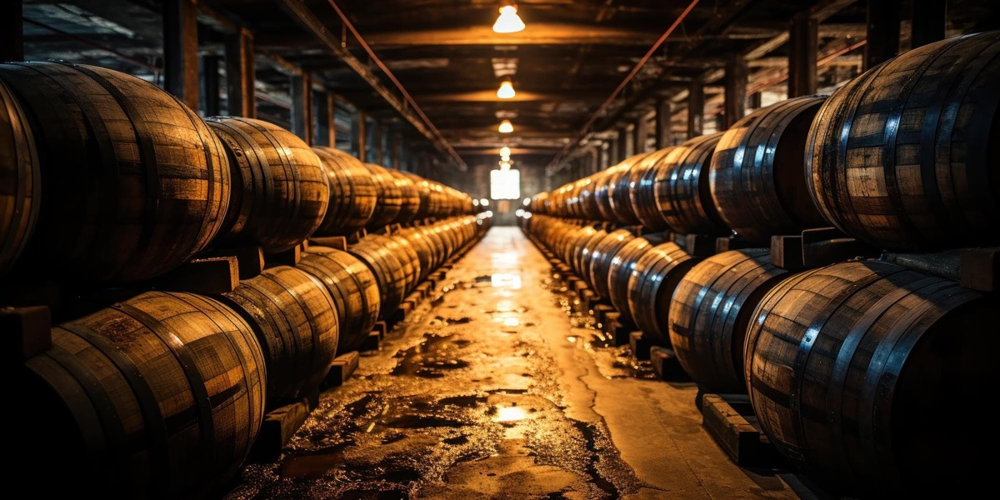

Percorso +1 · Tematico
Mugello da bere
Dal Pinot Nero al Vin Santo, passando per il Sangiovese e le bollicine
A PiediCon il Tuo Cane
A Piedi
- Durata
- 3/4 giorni
- Lunghezza
- 77 Km
- Difficoltà
- Difficile
- Dislivello
- 2767 Mt
Traccia (76,7 km)PartenzaArrivo
Porta il percorso con te
Scarica la traccia per il navigatore o per un'app come Komoot, OsmAnd o Wikiloc.
Sentieri e cammini attraversati
- Sentieri CAI
- nr. 19 - nr. 24 - nr. 16 - nr. 1 A
- Cammini
- Via degli Dei SOFT 8 - SOFT 7 - Pista Ecoturistica Sieve Cammino di Dante
Descrizione del percorso
Leggi il racconto di Orme del Mugello
Il percorso non può che partire da una rinomata azienda agricola produttrice di uno dei più amati vini della zona, l'Azienda Agricola Canneto III, sita in località Spugnole, nel Comune di Scarperia e San Piero, lungo la storica Via degli Dei, vicino al Castello del Trebbio, patrimonio UNESCO. Specializzata nella produzione di vino rosso, l'azienda vende direttamente in cantina i suoi prodotti, realizzati in piccole quantità. I vini di Canneto III sono ottenuti da un pregiato mix di uve Sangiovese, Canaiolo e Ciliegiolo, che conferiscono un sapore unico. Tra i più apprezzati c'è il Canneto III IGT Toscana, un vino rosso che, dopo la vendemmia, riposa per almeno due anni prima della commercializzazione, garantendo una qualità superiore e un perfetto equilibrio. Nonostante la produzione limitata, ogni bottiglia è il risultato di un'accurata attenzione ai dettagli, unendo passione per il territorio e la tradizione vinicola toscana.
Ci addentriamo nelle campagne sapientemente coltivate. Raggiungiamo la Tenuta Cafaggiolo, nel Comune di Scarperia e San Piero, la quale vanta una lunga tradizione vitivinicola legata alla famiglia Medici. I vigneti si estendono ai piedi del Castello di Cafaggiolo, simbolo storico della famiglia. L'azienda si dedica alla vinificazione biologica, rispettando la natura circostante. I vigneti, tra cui i sette ettari del Podere Fortuna, sono ideali per la coltivazione del Pinot Nero, grazie all'escursione termica tra giorno e notte. Vengono prodotte anche piccole quantità di Chardonnay e Rosato. La cantina utilizza lieviti naturali e fermentazione in tini di rovere, con invecchiamento in botti piccole per esaltare le caratteristiche del vino. L'azienda adotta pratiche sostenibili, eliminando pesticidi e utilizzando fertilizzanti naturali come le bucce d’uva. Inoltre, è impegnata nella sostenibilità ambientale con un impianto fotovoltaico per la produzione di energia pulita, contribuendo a una viticoltura responsabile.
Siamo alle porte di San Piero a Sieve, tappa della famosa Via degli Dei. Poco distante dal centro è presente la Fattoria di Cortevecchia, azienda a conduzione familiare, specializzata nella coltivazione del Pinot Nero su un ettaro di terreno. Fondata nel 2012 da Sandro Bettini, con il supporto di Nello Baglioni, si distingue per la produzione di uno spumante metodo classico da Pinot Nero, un progetto unico nella zona. I vigneti, situati in un’area ideale per questo vitigno, beneficiano di un clima ventilato e soleggiato. L'azienda adotta pratiche di viticoltura biologica, con un particolare metodo di allevamento ad alberello per garantire la corretta aerazione dei grappoli. Ogni operazione è eseguita manualmente, dalla raccolta alla potatura. Oltre allo spumante, è stato prodotto anche un vino rosso e un rosato, ma l’attenzione è focalizzata sullo spumante "Primum Salubre Ascesa", che, dopo 42 mesi di affinamento sui lieviti, si distingue per eleganza e finezza, entrando di diritto tra i migliori metodo classico italiani.
Da un vino ad un altro vino. Siamo nei pressi di Borgo San Lorenzo, e precisamente alla Tenuta Baccanella. Fondata negli anni '80 da nonno Aldo come azienda cerealicola e olivicola, si trasforma nei primi anni 2000 in una realtà vinicola. Dopo aver sviluppato una passione per il mondo del vino, la famiglia Cappetti avvia la produzione vinicola, partendo con un Vin Santo, "10", ottenuto da uve Chardonnay e affinato per oltre dieci anni. Oggi, la tenuta vanta mezzo ettaro di vigneti, coltivati principalmente a Pinot Nero e Chardonnay. Nel 2006, ispirati da un viaggio in Borgogna, i Cappetti decidono di coltivare il Pinot Nero, notando similitudini climatiche con il Mugello. L’azienda ha in programma di espandere i suoi vigneti, triplicando l’estensione delle terre vitate per aumentare la produzione mantenendo alta la qualità. La Tenuta Baccanella punta a produrre vini che riflettano il carattere e la tradizione del territorio, con un focus sulla qualità.
Assaporiamo non solo i grandi vini ma anche il sapore e gli odori che le campagne del Mugello riescono a darci. Oltrepassiamo il paese e dopo pochi chilometri, giungiamo alla Fattoria Corte Marchesi de’ Frescobaldi. La cantina rappresenta l’essenza della Toscana, celebrando la sua vocazione vitivinicola e la varietà dei suoi territori. La forza dell’azienda risiede nelle sue tenute, che producono vini ricchi di aromi e sensazioni uniche, frutto di un perfetto equilibrio tra tradizione e innovazione. Dietro ogni bottiglia c’è il lavoro di agronomi e enologi che, vivendo la vigna e il terroir, riescono a coglierne ogni dettaglio. La filosofia di Frescobaldi si basa sul rispetto: della tradizione, della Toscana e dei singoli terroir, che, grazie a una combinazione di suoli, altitudini e microclimi, creano vini con una personalità inconfondibile. Presso la Fattoria di Corte, è possibile partecipare a degustazioni di vini provenienti dalle diverse tenute, accompagnati da prodotti locali, come olio, formaggi e salumi, anch’essi provenienti dalle proprietà Frescobaldi.
Ci avviciniamo a Vicchio, importante centro nel cuore del Mugello. Tra le aziende che danno lustro a questi luoghi, si cita Terre di Giotto, una cantina situata a Gattaia, fondata da Michele Lorenzetti. Laureato in biologia, Michele si avvicina al mondo dell'enologia e scopre la biodinamica, trovando un'applicazione naturale alle sue convinzioni scientifiche. Nel 2006, acquista terreni ideali per la viticoltura e impianta il suo primo vigneto a un’altitudine tra i 500 e i 600 metri. I terreni argillosi- calcarei, con arenarie e scisti, sono perfetti per la biodinamica, che recupera tradizioni storiche del territorio, dove il Marchese degli Albizi aveva piantato varietà come Sauvignon Blanc, Pinot nero e Riesling. L’azienda si estende su 3 ettari, e la vinificazione segue un processo naturale, con fermentazioni spontanee in vasche di acciaio e anfore interrate, senza controlli della temperatura, filtrazioni o chiarifiche. Il risultato è una produzione di vini autentici che riflettono il territorio e la filosofia biodinamica di Lorenzetti.
Poco distante, posta tra il paese di Vicchio di Mugello e l’Appennino Tosco-Romagnolo, l'azienda vinicola Il Rio è di proprietà di Paolo Cerrini, che a metà degli anni '90 decise di scommettere sulle caratteristiche pedoclimatiche di una zona ritenuta fino ad allora poco vocata per la viticoltura. Il terreno argilloso e il clima continentale, con una forte escursione termica tra giorno e notte, si sono rivelati particolarmente favorevoli per l’impianto di vitigni nordici come il Pinot Nero, lo Chardonnay e il Sauvignon, che dal 2000 sono stati coltivati anche in località Le Panche. I vini sono lavorati con grande attenzione alla qualità e imbottigliati nella cantina Il Rio, che si trova in uno dei poderi storici della Fattoria di Molezzano. Grazie a questa combinazione di territorio, clima e metodi di lavorazione, Il Rio è riuscita a produrre vini di grande finezza ed eleganza, che esprimono appieno le caratteristiche uniche del Mugello.
In prossimità di Vicchio, che costeggiamo senza fare ingresso nel centro storico, è presente l'azienda vinicola fondata dalla famiglia Bacci: Bacco del Monte. Nel 1985, Sergio, Giorgia, Enrico ed Elena si trasferiscono a "Monte", dove piantano una piccola vigna per uso familiare. Il paesaggio circostante, con il Monteprimo come sfondo, ispira la crescita della loro passione per il vino. Nel 2016, Enrico ed Elena, insieme ai figli Silvia e Duccio, impiantano due ettari di Pinot Nero, dando vita ufficialmente all'azienda. La tenuta si trova in una zona collinare con terreni argillosi e un clima ideale per la viticoltura, producendo vini di alta qualità, in particolare il Pinot Nero. La filosofia di Bacco del Monte si basa sull'amore per la tradizione vitivinicola e sul rispetto per il territorio, con l’obiettivo di creare vini che riflettano autenticamente il paesaggio e la storia della famiglia.
Inizia la lunga, ma al contempo stesso piacevole, salita verso le colline. Si arriva ben presto alla Tenuta la Matteraia. Nel 1973, Ivo Malpaga acquista il podere La Matteraia, avviando un progetto di riqualificazione agricola. Vengono impiantati meli, olivi e un vigneto, e ristrutturata una parte della colonica destinata ad agriturismo. Fino al 2010, l'azienda si distingue per i suoi prodotti agricoli di qualità e il legame con il territorio. Quando Ivan subentra nel 2010, la Matteraia orienta la sua attività verso la viticoltura. Nuovi vigneti vengono impiantati e nel 2012 viene inaugurata una cantina moderna, che diventa il cuore dell’azienda. Grazie alla tradizione vinicola di famiglia, risalente al nonno Isacco, e alla collaborazione con un enologo, la qualità dei vini è eccellente. Tra questi spicca la Riserva Isacco, dedicata al nonno. La Matteraia oggi rappresenta un punto di riferimento nel Mugello, offrendo non solo vini pregiati, ma anche esperienze immersive nella sua cantina e tra i vigneti.
Inizia il lungo sali e scendi tra le colline. Si giunge al Borgo Macereto, dove è presente l’Azienda Agricola omonima. Questa si estende su 20 ettari, di cui 6 destinati a vigneto. Fondata nel 2014 dalla famiglia Foscarini, l'azienda si dedica alla viticoltura biologica, con l'obiettivo di produrre vini di alta qualità che riflettano le caratteristiche uniche del territorio. Il primo passo è stato recuperare 3 ettari di vigneto già coltivati a Sangiovese e Gamay, seguito nel 2016 dall’impianto di Pinot Nero e varietà bianche aromatiche come Riesling e Viognier. Il Sangiovese rimane il vitigno principale per i vini Chianti Rufina. La filosofia dell’azienda punta sulla bassa produttività e sulla qualità, con tecniche di allevamento come il cordone speronato e Guyot. L’azienda continua a sperimentare nuove tecniche di fermentazione e affinamento, cercando di unire tradizione e innovazione. Ogni bottiglia è il risultato di un processo rispettoso della natura e della passione per il lavoro agricolo e vinicolo.
Ancora poche centinaia di metri e si trova un’altra azienda, la Fattoria Il Lago, situata nel comune di Dicomano, nella parte alta del Chianti Rufina. Si estende su 350 ettari e vanta una tradizione vinicola secolare. Acquistata nel 1962 dalla famiglia Spagnoli, l’azienda ha avviato un processo di recupero agricolo e immobiliare, con particolare attenzione alla viticoltura. L’antico torchio in legno del 1806 testimonia il legame con la tradizione. Il capostipite Ezio Spagnoli, appassionato di questo luogo, ha fatto della fattoria il cuore della sua vita familiare, accogliendo momenti speciali con i suoi cari. Oggi, i figli Rolando, Francesco e Filippo portano avanti l’azienda con passione, mantenendo viva l’eredità del nonno. I vigneti, a un’altitudine tra i 300 e i 600 metri, sono dedicati principalmente al Sangiovese, ma ospitano anche Pinot Nero e Syrah. La cantina, che mescola tradizione e modernità, produce Chianti Rufina DOCG e Vin Santo. L’azienda, condotta biologicamente, offre anche ospitalità, permettendo agli ospiti di vivere un'esperienza immersiva nel paesaggio, degustando i pregiati vini locali.
Superiamo il paese di Dicomano e dopo una breve salita, soffermiamoci alla Cooperativa Agricola Voltumna. Nata nei primi anni 2000 come progetto collettivo di tre coppie, unite dalla volontà di coltivare la terra in modo sostenibile. Nel 2012, Marzio Politi e sua moglie rilevano l’attività, avviando un percorso autonomo. Marzio, che aveva impiantato le viti nel 2002 e adottato il biologico e la biodinamica con l’enologo Michele Lorenzetti, si trova di fronte a una sfida importante. Nonostante la perdita della vigna di Pinot Nero nel 2015, l’azienda si riduce a due ettari e mezzo e avvia un processo di reinnesto, sperimentando nuove soluzioni. Voltumna, con vigneti biodinamici e un clima ideale per la viticoltura, produce principalmente Sangiovese e Merlot, vinificati con fermentazioni spontanee e affinamenti in legno o anfora. La filosofia aziendale si basa sulla biodiversità, la sostenibilità e il rispetto per la natura, mirando a produrre vini che riflettano l'identità del territorio e l'artigianalità della lavorazione.
Terminiamo il nostro percorso a Frascole, dove è presente un'azienda situata in un luogo ricco di storia, testimoniata da ritrovamenti etruschi e romani che confermano la tradizione viticola antica. Oggi, a un’altitudine tra i 300 e i 500 metri, i vigneti producono vini artigianali di grande qualità, seguendo con cura ogni fase dalla vigna alla bottiglia. L'azienda coltiva vitigni autoctoni come Sangiovese e Trebbiano, e varietà internazionali come Pinot Nero e Traminer, creando vini che riflettono il carattere unico del territorio. Il Vin Santo DOC, invecchiato per oltre dieci anni, è la loro perla più pregiata. Frascole produce anche olio extravergine d'oliva, con un approccio biologico certificato dal 1999. Gestita dalle famiglie Lippi e Santoni dal 1992, l'azienda include anche un agriturismo, offrendo esperienze uniche in un ambiente naturale e accogliente.
Voltumna, storia etrusca
Voltumna, divinità ctonia etrusca, divenne il dio supremo del pantheon etrusco, protettore della città di Volsinii e della Lega delle dodici città etrusche. Era associato al santuario federale del Fanum Voltumnae. Sebbene potesse essere un aspetto del dio Tinia, non ha una corrispondenza diretta nel pantheon greco- romano, sebbene sia all'origine della divinità romana Vertumno. Il legame tra le dodici città etrusche veniva rinnovato annualmente nel bosco sacro del Fanum Voltumnae.
Dormire, mangiare e prodotti lungo il percorso
Strutture ricettive (67)
- Affittacamere Via Degli Dei contatti
- Agriturismo Borgo Macereto contatti
- Agriturismo La Matteraia contatti
- Agriturismo Le Pozze contatti
- Agriturismo Pian Barucci contatti
- Agriturismo Poggio Bartoli contatti
- Area Di Sosta Vecchio Ponte contatti
- BeB AURA contatti
- BeB ELISIR DI TAGLIAFERRO contatti
- BeB IL PITTORE contatti
- BeB KINGA contatti
- BeB LA CASA DI COSIMO contatti
- BeB LA CASA FUORI PORTA contatti
- BeB LA PIEVE contatti
- BeB LE DUE VOLPI contatti
- BeB TAGLIAFERRO contatti
- BeB VACANZE IN MUGELLO contatti
- Borgo! Hospitality contatti
- Camping Village Mugello Verde contatti
- Casa Torta contatti
- Castello Del Monsignore contatti
- Fattoria I Ricci contatti
- Fattoria La Topaia contatti
- Fattoria Le Case contatti
- Frascole contatti
- Hotel Ebe contatti
- I Castagni Dei Medici contatti
- I Giardini Di Marcello contatti
- Il Borghetto contatti
- Il Borgo Di Elisa contatti
- IL BORGO DI VILLA CELLAIA - widespread hotel contatti
- Il Fangaccio contatti
- Il Gallo Birichino contatti
- IL MUGELLO BeB contatti
- Il Muretto contatti
- Il Pino Del Capitano contatti
- Il Podere Di Tullio contatti
- Il Villino contatti
- La Casa Di Colle contatti
- La Colombaia contatti
- La Fattoria Del Farneto contatti
- La Felicina contatti
- La Spiga contatti
- La Stazione Di Monta contatti
- La Terrazza contatti
- Locanda Degli Artisti contatti
- Locanda Di Alberi contatti
- MONSIGNOR DELLA CASA COUNTRY RESORT eSPA contatti
- Podere Capitignano contatti
- Podere La Carbonaia contatti
- Podere Moiata-Fattoria Di Campestri contatti
- Poderuzzo contatti
- Poggio A Sieve contatti
- Residenza Di Campagna Montelleri contatti
- Rupecanina contatti
- Short Term Rental In Borgo San Lorenzo contatti
- Short Term Rental In Dicomano contatti
- Short Term Rental In Vicchio contatti
- Sommavilla contatti
- Tertulia coliving contatti
- Villa Campestri contatti
- Villa Dalia contatti
- Villa Di Pilarciano contatti
- Villa La Commenda Concordia contatti
- Villa Le Case contatti
- Villa Maltempo contatti
- Villino Le Vigne contatti
Aziende (14)
- Azienda Agricola Palazzo Vecchio contatti
- B.beb La Casa di Cosimo
- Bacco del Monte di Elena Bartalucci contatti
- Banco Fiorentino - Filiale di Borgo San Lorenzo
- Banco Fiorentino - Filiale di Vicchio
- Borgo Macereto contatti
- Camping Village Mugello Verde contatti
- Farming
- Frascole soc.agr. di Lippi E. Santoni C. e E. s.s. contatti
- Marchisoro Farm
- Monsignor della Casa Country Resort e Spa
- Poggio a Sieve - Casa Vacanze
- Tenuta Cafaggiolo contatti
- Tenuta Matteraia contatti
Il nome della struttura porta al suo sito web; "contatti" apre la scheda con telefono e mail sul portale turistico Mugello Toscana (per chi non ha un sito c'è solo quella). Le aziende portano ai loro siti. Sono tutte segnate anche sulla mappa.
Percorso, traccia e testi di Orme del Mugello, pubblicati con il loro permesso.